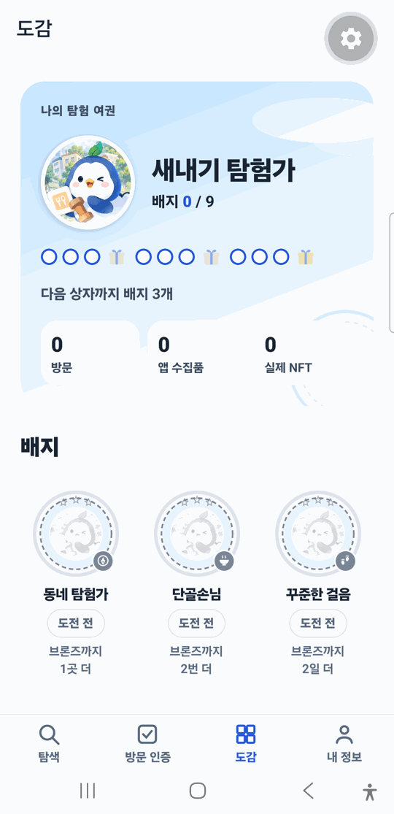
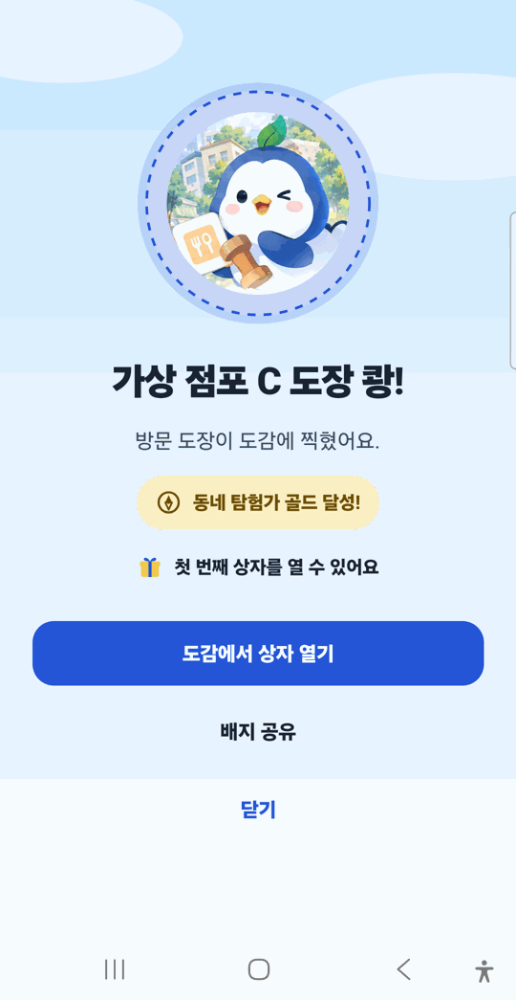
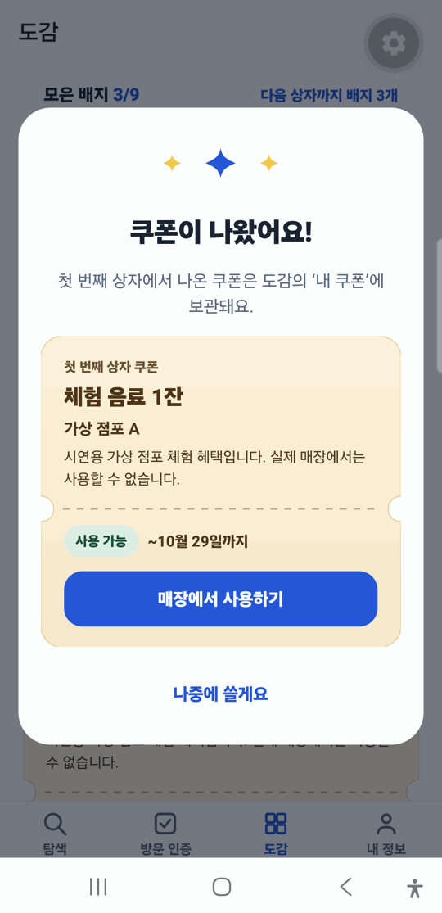

검증된 기준선
Phase 0~2 기준선과 Phase 3 계약→Outbox→Worker→Android 도감이 자동화·로컬 Anvil 검증을 통과했습니다.

월계1동 음식점 탐색 · 시연 체험
음식점 탐색과 점주 확인, QR 방문 인증을 하나의 흐름으로 연결합니다. 시연은 가상 점포를 사용하며 앱 수집품은 NFT가 아닙니다. 지갑은 선택 기능입니다.
항목별 VERIFIED·BLOCKED 판정과 근거는 프로젝트 상태 문서에서 최신 기준으로 읽고, 필수 시험 36개는 31 PASS · 2 BLOCKED · 3 NOT_RUN입니다.
사용자 여정
사용자는 방문과 도감을 먼저 경험하고, 실제 NFT를 원할 때만 외부 지갑을 연결합니다.
새 기능 · 탐험 여권
점원이 확인한 방문만 셉니다. 메달 등급이 오르면 보상 상자가 열리고, 점주가 동의해 등록한 혜택만 쿠폰으로 나옵니다.
실측 화면 안내 개발 빌드를 실제 휴대전화에서 로컬 API와 시연 가상 점포 데이터로 확인한 화면입니다(2026-09-29). 공개 서버 배포 전이며, 운영 DB에는 점주 동의 뒤 등록하기 전까지 혜택이 없습니다.



역할 분리
현실 이용은 DB에, 발행된 NFT 소유 기록은 기존 블록체인에 남깁니다.
검증 현황
저장소 기준선 통과를 제품 기능 통과로 확대 해석하지 않습니다.
Phase 0~2 기준선과 Phase 3 계약→Outbox→Worker→Android 도감이 자동화·로컬 Anvil 검증을 통과했습니다.
W01·W02·W03·W06·W07·W09, Q01·Q02·Q03·Q05, R01·R03, M01~M08, C01~C04, D01·D03이 PASS했습니다. W04·W05는 외부 환경 부재로 BLOCKED이며 D02·QR 카메라·release·운영 복원은 NOT_RUN입니다.
시험 원장 보기협약 점포, Play 승인, 매출 증가, 현장 검증을 실제 증거 없이 표시하지 않습니다.
현재 상태 보기대회 평가 연결
논리의 연결성30
실현·상용화20
기획 재현성20
창의·차별성20
발표10
실현·상용화30
구현·기술력20
지역 적합성20
창의·차별성20
참여도5
발표5
재현 가능한 문서
긴 원문을 반복하지 않고, 필요한 판단과 실행 기록으로 바로 이동합니다.